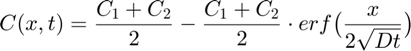

Project nr. 1.
Groupe 3. Tobias*Eirik^2
Abstract:
Error using dbstatus Error: File: C:\Users\fyrst\Documents\GitHub\TMT4260GruppeNR3\ProjectNo1.m Line: 17 Column: 5 Expression or statement is incomplete or incorrect.
Contents
Substitutional-self diffusion, derive analytical solution

Substitutional-self diffusion, Anlytical solution
clear all close all T = ; %[K] D0_Ni = 10^-5; % ref: D. Porter, K Easterling, M. Sherif. Phase Transformations in Metal and Alloys. Third edition. tabel 2.2 D0_Cu = ???; Q_Ni = ; Q_Cu = ; % Equation for diffusion: D_Ni = D_C = C1 = 1; C2 = 0; % Analytical solution of ficks law: funCxt = @(x,t,D) (C1 + C2)/2 - ((C1 - C2)/2) * erf(x/(D*t)); t = 0; % [s] dt = 1000; % [s] C = []; % [quantity m^3] composition x = linspace(-1,1,50); % [mm] position i = 0; while t < 30*60*60 % [s] run for 30 hours i = i +1; for j = 1:length(x) if x(j) > 0 D = D_Ni; else D = D_Cu; end C(i,j) = funCxt(x(j),t(i),D); end t(i+1) = t(i) + dt; end % Plotting consentration profile at 5 different times: j = 1; for i = floor(linspace(1,(length(t)-1),5)) legends{j} = [num2str(round(t(i)/60/60,3)),' hours']; j = j+1; % counter for legend plot(x,C(i,:)) hold on end title('Concentrationprofile in bar') xlabel('x [mm] ?? blir det riktig med mm???') legend(legends)
Vi kan se at profilen er symmetrisk om midtpunktet av baren.. blablabla